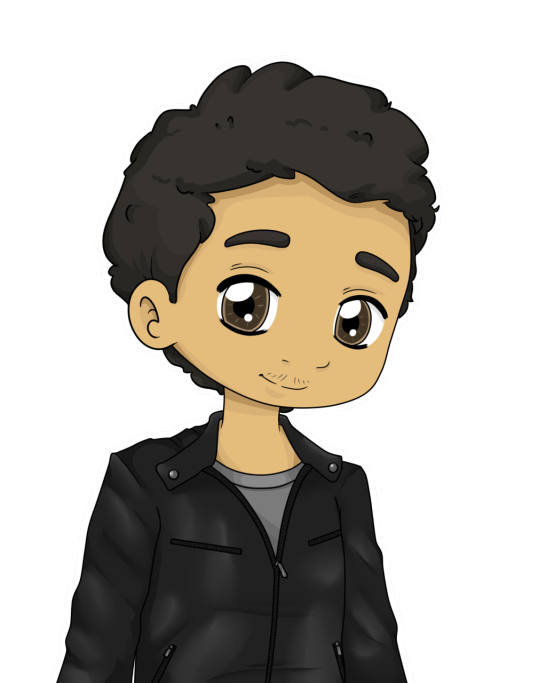

Je suis où ?
Je suis où ?
 Dans un labo pourri, mais qu’est-ce que tu fais là ?
J’en sais rien moi ! Je me souviens pas. Et vous ? Vous faites quoi ?
 C’est un peu long à expliquer, mais en gros, Matéo veut devenir maître du monde, il a transformé Léopold en husbando, et on cherche un moyen de le retransformer en humain. Après on ira casser la gueule à Matéo et ses larbins.
C’est un peu long à expliquer, mais en gros, Matéo veut devenir maître du monde, il a transformé Léopold en husbando, et on cherche un moyen de le retransformer en humain. Après on ira casser la gueule à Matéo et ses larbins.
D’accord.
Du coup, tu n’aurais pas une idée d’où on pourrait trouver un antidote ?
Le truc qui brille sur le piédestal là-bas ?
Oh putain c’est ça !
Ivan, qui n’avait pas cessé de serrer Léopold pendant tout le voyage, se rua sur le flacon, contenant une potion rouge. Il posa Léopold par terre, et versa le contenu de la fiole à l’endroit où était dessinée sa bouche. Tout le monde l’entourait, attendant une réaction.
 Vous trouvez pas qu’il sent mauvais quand même ?
Vous trouvez pas qu’il sent mauvais quand même ?
C’est normal, on l’a pas mis à la machine.
Soudain, une explosion de fumée bleue se produisit, faisant tousser Ivan. Lorsque que sa toue s’atténua, il entendait pourtant encore des toussotements. L’écho ? Non, c’était une autre personne…
LÉOPOLD !
Ivan lui sauta dessus, alors qu’il essayait désespérément de se relever.
Tu m’as tellement manqué !
 J’ai vu ça petit cochon ! Tu sais que j’ai tout entendu ? Je peux te dire que t’es un sacré dégueulasse quand tu veux !
J’ai vu ça petit cochon ! Tu sais que j’ai tout entendu ? Je peux te dire que t’es un sacré dégueulasse quand tu veux !
Ah… ouais… haha… Mais pourquoi tu dis ça devant tout le monde ?
Ah ouais désolé. Salut les gars, vous m’avez manqué aussi. Jonathan, ça te dit d’aller niquer des mères avec nous ?
Carrément !
Ok, alors c’est parti ! Direction torchon truc !
 Alors en fait… C’est plus Tochongrad…
Alors en fait… C’est plus Tochongrad…
Comment ça ?
Je viens de voir que Camille est mort, c’est Matéo qui a pris sa place. Et de ce que je vois, ça à l’air d’être la merde dehors !
Ok, raison de plus pour se dépêcher ! C’est quoi du coup la capitale ?
Loliland.
Putain Matéo…
Ils commencèrent à se diriger vers la sortie, mais Ivan retint Léopold par le bras.
Attend…
Qu’est-ce q…
Ivan embrassa Léopold. Un long et passionné baiser. Léopold lui rendit son amour, et tout deux restèrent ainsi pendant une dizaine de secondes. Thibault contemplait la scène du coin de l’œil. Non. Décidément, il ne pourrait jamais tenter quoi que ce soit avec Alexis.
Oh putain c’est quoi ce bordel ?!
Samy venait de sortir de la mairie, suivi par Ivan. Devant eux, se dressait le tableau d’un champ de bataille. L’armée faisait des perquisitions, et emmenait les gens dans des camions. Certains criaient, se débattaient, et finissaient abattus de deux balles dans le dos.
On est retourné en 1940 ?
Le bon vieux temps…
Non, c’est juste Matéo qui est arrivé au pouvoir.
 Bordel, faut se grouiller ! Tous dans le bus vite !
Bordel, faut se grouiller ! Tous dans le bus vite !
Ils montèrent en vitesse, et Sophiane démarra alors qu’un policier courrait vers eux.
Sophiane t’es trop lent putain ! On se fait courser par un tank !
Bon, allez bouge de là.
 Samy qu’est-ce que tu fous ?
Samy qu’est-ce que tu fous ?
Laissez-moi faire.